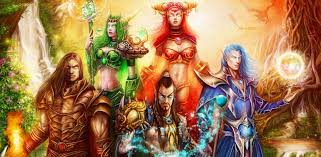

Satisfechos con el pequeño universo que habían creado, los titanes se prepararon para abandonar Azeroth. No obstante, antes de partir, encomendaron a las grandes especies del planeta la tarea de vigilar Kalimdor, para evitar que fuerzas adversas amenazaran su perfecta armonía. En aquella época, existían muchas clases de dragones.
Sin embargo, había cinco grupos que dominaban a sus hermanos. Estos cinco grupos fueron elegidos por los titanes para guiar al mundo naciente. Los miembros más destacados del Panteón transmitieron parte de su poder a los jefes de las bandadas de dragones. Estos dragones majestuosos (que se describen a continuación) eran conocidos como los Grandes Aspectos o los Dragones Aspectos.
Aman'Thul, Alto Padre del Panteón volcó parte de su poder cósmico sobre el gigantesco dragón de bronce Nozdormu. El Alto Padre otorgó poderes a Nozdormu para que vigilara él mismo el transcurrir del tiempo y supervisara los intrincados caminos de la fortuna y el destino. El estoico y honorable Nozdormu era conocido con el nombre de El Atemporal.
Eonar, guardiana de la vida, otorgó parte de su poder a la gigantesca Alexstrasza. Mucho tiempo después, Alexstrasza recibió el nombre de la Protectora, pues su misión era defender a todas las criaturas vivientes del planeta. Gracias a su suprema sabiduría y a su ilimitada compasión por todos los seres vivos, Alexstrasza fue nombrada reina de los dragones por los de su especie.
Eonar también bendijo a la hermana menor de Alexstrasza, la ágil dragona verde Ysera, con una porción de su influencia sobre la naturaleza. Ysera cayó en un trance eterno, atada al Sueño de la Creación. Conocida como la Soñadora, vigilaría las extensas áreas salvajes del mundo desde su verdeante reino, el Sueño Esmeralda.
Norgannon, titán guardián del conocimiento y mago maestro, cedió al dragón azul Malygos parte de su vasto poder. A partir de entonces, Malygos fue conocido como el Tejechizos, el guardián de la magia y el arcano oculto.
Khaz'goroth, creador de titanes y forjador del mundo, confirió parte de su extenso poder al poderoso dragón negro Neltharion. Al bondadoso Neltharion, conocido posteriormente como el Guardián de la Tierra, se le otorgó el dominio de la tierra y los rincones más recónditos del orbe. Encarnaba la fortaleza del mundo y actuaba como gran protector de Alexstrasza.
Con estos poderes, los Cinco Aspectos tenían la misión de defender al mundo en ausencia de los titanes. Cuando los dragones ya estaban preparados para vigilar su creación, los titanes abandonaron Azeroth para siempre. Desafortunadamente, el descubrimiento del nuevo mundo por parte de Sargeras era solo cuestión de tiempo.